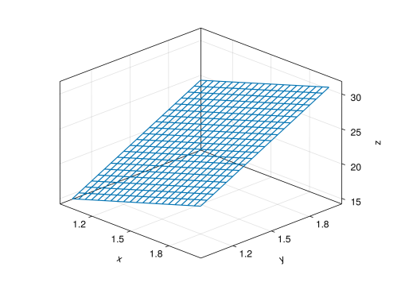
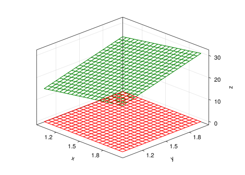
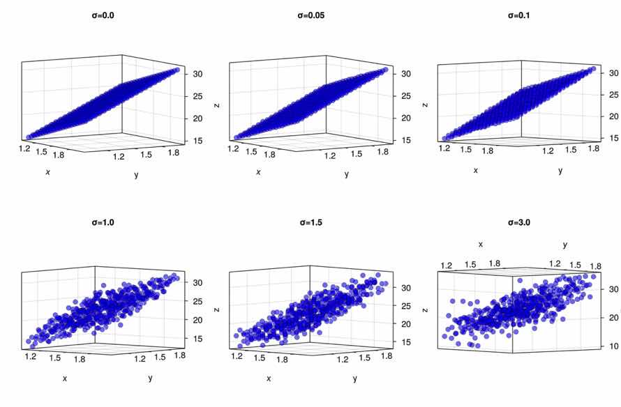
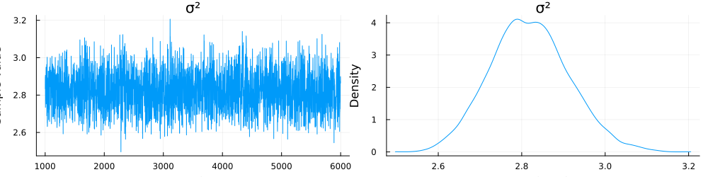

using CairoMakie,Distributions,Turing,LinearAlgebra
using Plots,StatsPlots
import CairoMakie:wireframe!,scatter!7-what is dimension in mathematics?
info
ref: Understanding Regression Analysis ch06 figure 6.3
What is a dimension? This is a very difficult problem to understand. The most basic problem in mathematics is the measurement of the physical properties of reality. The most commonly used tool for measuring is a ruler. We can turn the dimension problem into another problem, and to measure the differences between different objects in a set, we need several rulers that cannot replace each other
什么是维度.这是一个非常难理解的问题.数学最基础的问题是对现实实物属性的度量.度量最常用的工具是直尺. 我们可以把维度问题转化为另一个问题,要度量一个集合中不同对象的差异 ,需要几把不能相互代替的尺子
1 生活在三维空间中平面的维度
xs=ys=Vector(1:0.05:2)
zs1=[-1+6*x+10*y for x in xs ,y in ys]
zs2=[0 for x in xs, y in ys]21×21 Matrix{Int64}:
0 0 0 0 0 0 0 0 0 0 0 0 0 0 0 0 0 0 0 0 0
0 0 0 0 0 0 0 0 0 0 0 0 0 0 0 0 0 0 0 0 0
0 0 0 0 0 0 0 0 0 0 0 0 0 0 0 0 0 0 0 0 0
0 0 0 0 0 0 0 0 0 0 0 0 0 0 0 0 0 0 0 0 0
0 0 0 0 0 0 0 0 0 0 0 0 0 0 0 0 0 0 0 0 0
0 0 0 0 0 0 0 0 0 0 0 0 0 0 0 0 0 0 0 0 0
0 0 0 0 0 0 0 0 0 0 0 0 0 0 0 0 0 0 0 0 0
0 0 0 0 0 0 0 0 0 0 0 0 0 0 0 0 0 0 0 0 0
0 0 0 0 0 0 0 0 0 0 0 0 0 0 0 0 0 0 0 0 0
0 0 0 0 0 0 0 0 0 0 0 0 0 0 0 0 0 0 0 0 0
0 0 0 0 0 0 0 0 0 0 0 0 0 0 0 0 0 0 0 0 0
0 0 0 0 0 0 0 0 0 0 0 0 0 0 0 0 0 0 0 0 0
0 0 0 0 0 0 0 0 0 0 0 0 0 0 0 0 0 0 0 0 0
0 0 0 0 0 0 0 0 0 0 0 0 0 0 0 0 0 0 0 0 0
0 0 0 0 0 0 0 0 0 0 0 0 0 0 0 0 0 0 0 0 0
0 0 0 0 0 0 0 0 0 0 0 0 0 0 0 0 0 0 0 0 0
0 0 0 0 0 0 0 0 0 0 0 0 0 0 0 0 0 0 0 0 0
0 0 0 0 0 0 0 0 0 0 0 0 0 0 0 0 0 0 0 0 0
0 0 0 0 0 0 0 0 0 0 0 0 0 0 0 0 0 0 0 0 0
0 0 0 0 0 0 0 0 0 0 0 0 0 0 0 0 0 0 0 0 0
0 0 0 0 0 0 0 0 0 0 0 0 0 0 0 0 0 0 0 0 0function plot_wireframe(zs::Matrix)
fig=Figure()
ax=Axis3(fig[1,1],azimuth=-pi/4)
wireframe!(ax,xs,ys,zs)
fig
end
function plot_wireframe(zs1::Matrix,zs2::Matrix)
fig=Figure()
ax=Axis3(fig[1,1],azimuth=-pi/4)
wireframe!(ax,xs,ys,zs1,color=:green)
wireframe!(ax,xs,ys,zs2,color=:red)
fig
endplot_wireframe (generic function with 2 methods)plot_wireframe(zs1)

plot_wireframe(zs1,zs2)

Figure 2 中 度量两个平面的工具是一样. 我们只考虑平面中点之间的属性的差异,脱离三维空间. 绿色平面和红色平面度量方法相同, 只需要两种不同的尺子,度量 x,y 方向的属性就可以分开平面里的不同个体.
2. add some noise
在上面图的基础上,我们可以增加一些噪音
d=Normal(0,2)
zs4=[[x,y,-1+6*x+10*y+rand(d)] for x in xs for y in ys]
matrix=hcat(zs4...)3×441 Matrix{Float64}:
1.0 1.0 1.0 1.0 … 2.0 2.0 2.0 2.0
1.0 1.05 1.1 1.15 1.85 1.9 1.95 2.0
15.4722 17.5936 15.6399 17.2154 26.8933 29.1061 29.4819 33.3816这时,两个尺子就不够了. 还需要度量噪音,这就是第三位维度
with different noise
σs=[0.0,0.05,0.1,1,1.5,3]
dists=[Normal(0,σ) for σ in σs ]6-element Vector{Normal{Float64}}:
Normal{Float64}(μ=0.0, σ=0.0)
Normal{Float64}(μ=0.0, σ=0.05)
Normal{Float64}(μ=0.0, σ=0.1)
Normal{Float64}(μ=0.0, σ=1.0)
Normal{Float64}(μ=0.0, σ=1.5)
Normal{Float64}(μ=0.0, σ=3.0)在不同噪音情况下的平面变化情况
function plot_matrix_arr()
fig=Figure(resolution=(1200,800))
for idx in eachindex(dists)
zs=[[x,y,-1+6*x+10*y+rand(dists[idx])] for x in xs for y in ys]
matrix=hcat(zs...)
ax=Axis3(fig[fldmod1(idx,3)...],title="σ=$(σs[idx])",azimuth=pi/8,elevation=-pi/4)
scatter!(ax,matrix,color=(:blue,0.5),strokewidth=0.5, strokecolor=:black)
end
fig
end
plot_matrix_arr()

3. Bayesian Infrence
在上面的的图示中, 我们通过添加噪音获得了数据, 通过添加正态分布的噪音,使得数据 形成三个维度, 第三个维度是不确定性因素, 因此可以通过贝叶斯方法推断不确定因素
3.1 生成数据
d=Normal(0,3)
zs=[-1+6*x+10*y+rand(d) for x in xs for y in ys]
X=hcat(xs,ys)21×2 Matrix{Float64}:
1.0 1.0
1.05 1.05
1.1 1.1
1.15 1.15
1.2 1.2
1.25 1.25
1.3 1.3
1.35 1.35
1.4 1.4
1.45 1.45
1.5 1.5
1.55 1.55
1.6 1.6
1.65 1.65
1.7 1.7
1.75 1.75
1.8 1.8
1.85 1.85
1.9 1.9
1.95 1.95
2.0 2.03.2 Turing workflow
@model function linear_regression(X,y)
n = length(y)
mu=[-1+6*x+10*y for x in X[:,1] for y in X[:,2]]
σ² ~ truncated(Normal(0, 5); lower=0)
for i in 1:n
y[i] ~ Normal(mu[i], σ²)
end
endlinear_regression (generic function with 2 methods)3.3 random sampling
model = linear_regression(X,zs)
chain = sample(model, NUTS(), 5_000)┌ Info: Found initial step size
└ ϵ = 0.00625
Sampling: 20%|████████▎ | ETA: 0:00:00Sampling: 100%|█████████████████████████████████████████| Time: 0:00:00Chains MCMC chain (5000×13×1 Array{Float64, 3}):
Iterations = 1001:1:6000
Number of chains = 1
Samples per chain = 5000
Wall duration = 7.53 seconds
Compute duration = 7.53 seconds
parameters = σ²
internals = lp, n_steps, is_accept, acceptance_rate, log_density, hamiltonian_energy, hamiltonian_energy_error, max_hamiltonian_energy_error, tree_depth, numerical_error, step_size, nom_step_size
Summary Statistics
parameters mean std naive_se mcse ess rhat ⋯
Symbol Float64 Float64 Float64 Float64 Float64 Float64 ⋯
σ² 2.8191 0.0944 0.0013 0.0019 2258.7134 1.0000 ⋯
1 column omitted
Quantiles
parameters 2.5% 25.0% 50.0% 75.0% 97.5%
Symbol Float64 Float64 Float64 Float64 Float64
σ² 2.6411 2.7545 2.8171 2.8807 3.0125
Plots.plot(chain)
3.4 bayesian Workflow
下面总结一下流程,在贝叶斯统计中,对于使用软件包的人来讲, 理解采样过程 不是必须的,但是需要理解采样过程在流程中处于什么位置. 使用软件包要关注如何 使用概率分布构建模型, 贝叶斯采样时如何起作用的
flowchart TD
Init("building model")
A["Normal(μ=0,σ=0.05)"]
B["Normal(μ=0,σ=0.1)"]
C["Normal(μ=0,σ=0.5)"]
D["Normal(μ=0,σ=1.5)"]
E["Normal(μ=0,σ=2)"]
F["Normal(μ=0,σ=3)"]
G[(Data)]
Init-->A
Init-->B
Init-->C
Init-->D
Init-->E
Init-->F
A-->G
B-->G
C-->G
D-->G
E-->G
F-->G
在 Figure 3 中 我们可以设定一系列不同参数的 概率分布, 然后从每个模型中随机采样, 计算最大似然率.
遍历概率模型的参数生成不同的概率分布, 然后从中采样, 生成数据与 观测数据最为相似的参数就作为模型的最优参数.
抽样方法影响参数精度, 但是不改变工作流程.